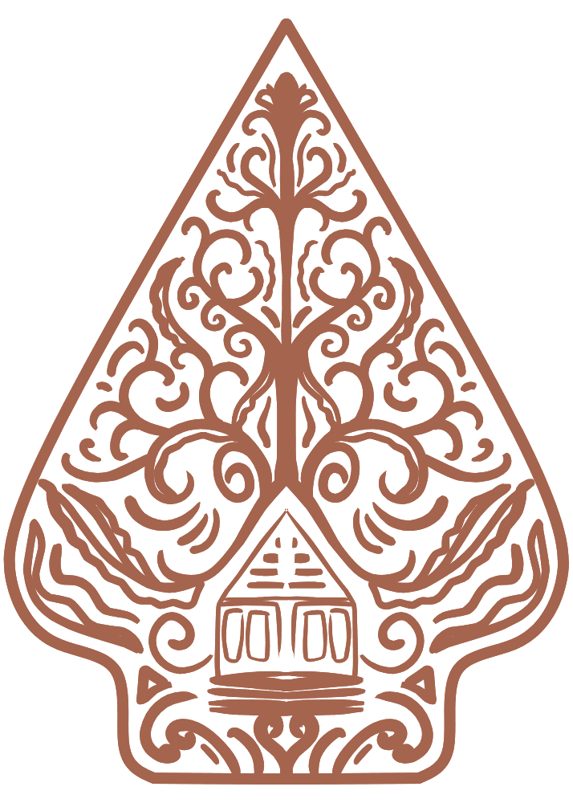
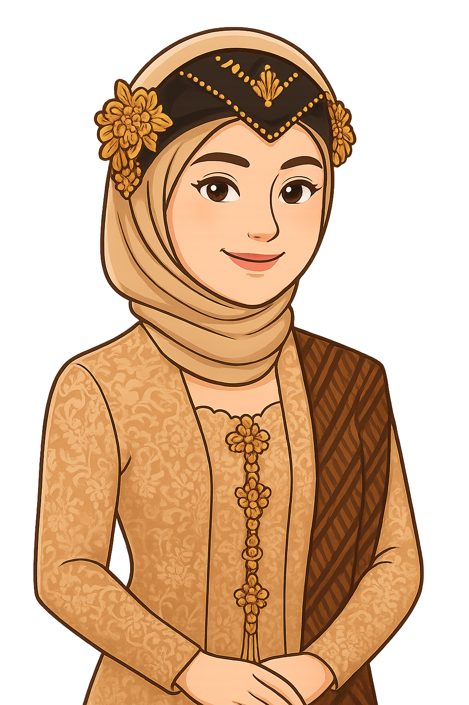

Amri & Fira
Amri & Fira

Kami Yang Berbahagia
Dan diantara tanda-tanda (kebesaran)-Nya ialah Dia menciptakan pasangan-pasangan untukmu dari jenismu sendiri
Sabtu, 23 Agustus 2025
Jl. Kapten Rahmad Buddin Psr 5. GG. Jambu Lor. Podo Rukun Rengas Pulau Medan Marelan

Saidi Amri
Saidi Amri adalah anak ke 3 dari 6 bersaudara. Pertemuan dengan pujaan hati awal pandangan pertama awalnya hanya sapa ringan, perlahan perasaan itu tumbuh tanpa kami sadari.
&
🏡 Kisah Cinta Kami 🏡
Sekilas cerita yang membawa kami hingga pada titik ini-
Pertemuan yang Tak Terduga
Di lingkungan yang sama, kami dulu hanya sekadar bertemu di jalan setapak dekat rumah—sapaan ringan, senyum singkat, tak pernah kami kira akan menjadi awal dari sesuatu yang begitu indah. Hari demi hari, kebersamaan kecil di sekitar kampung perlahan menumbuhkan rasa; dari obrolan ringan di sore hari, tawa yang kami bagi, hingga perhatian kecil yang tak terucap—semua merangkai benang-benang cinta yang semakin kuat. -
Cinta yang Tumbuh Dekat Hati
Siapa sangka, orang yang dulu hanya sebatas sapaan di pagi hari kini menjadi sahabat, teman, dan belahan hati. Dari lingkungan yang sama, kami belajar bahwa cinta bisa hadir di tempat paling dekat—di rumah, di jalan yang biasa kami lalui, dan di hati yang selalu siap menerima. Kini, kami siap melangkah bersama, menulis babak baru, membangun rumah dan mimpi-mimpi, serta mengukir cinta yang tak akan pudar. 💍❤️
Undangan dan Acara
Kami mengundang Anda untuk menghadiri acara ini, kedatangan Anda sungguh berarti. Mari rayakan kebahagiaan ini bersama-sama.Akad Nikah
08:00 - Selesai
Resepsi
10:00 - Selesai
Sabtu, 23 Agustus 2025
Jl. Kapten Rahmad Buddin Psr 5. GG. Jambu Lor. Podo Rukun Rengas Pulau Medan Marelan
Simpan Tanggal
Turut Mengundang
Pihak Wanita
- Alm. H.Misdi / Almh. Tuminem (Kakek/Nenek)
- Hj.Wagiyem S.Pd / H.Karmadi (Bude/Pakde)
- Jumiati / Sunarto (Bulek/Paklek)
- Voningsih / Rahmad (Bulek/Paklek)
- Srimaulida / Andi (Kakak/Abang)
- Sukoto / Sutinem (Pakde/Bude)
- Suwekno / Suhaimi (Pakde/Bude)
- Tuginem / Eddy Kuntoro S.Pd (Bude/Pakde)
- Rafiqa Salsabila (Kakak)
- Aisyah Khairinniswa (Adik)
Pihak Pria
- Alm. Sakun / Almh. Tukiyem (Kakek/Nenek)
- Topik Hidayat / Siti (Pakcik/Makcik)
- Iwan Efendi / Raima (Pakcik/Makcik)
- Zenab / Ari (Ibu/Om)
- Nana Permata Sari / Arman (Ibu/Om)
- Riani / Margono (Bibi/Paman)
- Legito / Mawik (Pakde/Bude)
- Iswanto / Yuli (Paklek/Bulek)
- M. Sahri / Anggi (Abang/Kakak)
- Fitri Handayani / Andre (Kakak/Abang)
- Ade Syahputra (Adik)
Peta Lokasi
Anda dapat menuju lokasi acara kami dengan bantuan peta di bawah ini. Atau Anda bisa buka di Google MapsKirim Hadiah
Jika Anda ingin mengirimkan kado nikah, silakan kirim dengan cara di bawah ini
Mandiri
123456789
A/N SribuLink
Surah Ar-Rum (30) : Ayat 21
وَمِنْ آيَاتِهِ أَنْ خَلَقَ لَكُم مِّنْ أَنفُسِكُمْ أَزْوَاجًا لِّتَسْكُنُوا إِلَيْهَا وَجَعَلَ بَيْنَكُم مَّوَدَّةً وَرَحْمَةً ۚ إِنَّ فِي ذَٰلِكَ لَآيَاتٍ لِّقَوْمٍ يَتَفَكَّرُونَ
"Dan di antara tanda-tanda (kebesaran)-Nya ialah Dia menciptakan pasangan-pasangan untukmu dari jenismu sendiri agar kamu cenderung dan merasa tenteram kepadanya, dan Dia menjadikan di antaramu rasa kasih dan sayang. Sungguh, pada yang demikian itu benar-benar terdapat tanda-tanda (kebesaran Allah) bagi kaum yang berpikir"